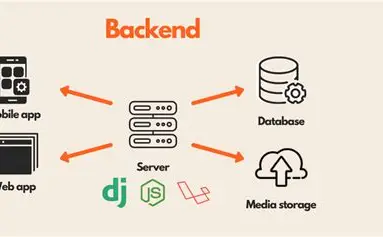

Backend

Якщо фронтенд — це обличчя сайту, то Backend — це його «мозок» і прихована від очей інфраструктура. Серверна частина відповідає за те, де зберігаються дані користувачів, як обробляються запити та яким чином інформація миттєво доставляється у браузер. Без бекенду неможливо уявити жоден інтернет-магазин, соціальну мережу чи особистий кабінет.
Для створення серверів активно використовуються різні платформи та мови програмування, серед яких особливе місце посідає середовище Node.js та фреймворк Express.js. Вони дозволяють запускати код JavaScript поза межами браузера та швидко налаштовувати локальні сервери. Більше корисної інформації про це ви можете знайти на офіційному сайті Node.js або в документації з веб-розробки.
Усі компоненти веб-додатку утворюють єдину злагоджену екосистему, де клієнт і сервер постійно обмінюються даними через мережу. Вивчення взаємодії між цими двома світами є ключем до розуміння професійного програмування та створення повноцінних проєктів.
Назад